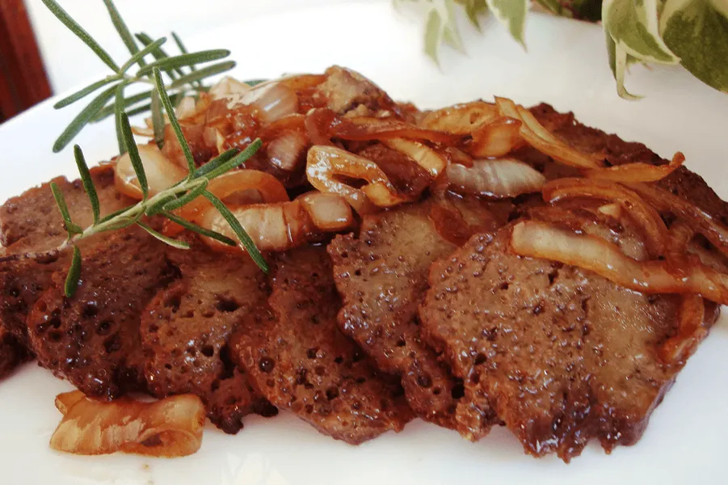

Creme de Batata Baroa
Aveludado, quentinho e reconfortante. Um creme que abraça você de dentro pra fora.
Cremoso, perfumado e com aquele toque de coco que faz toda a diferença, nosso Pudim de Coco é uma sobremesa que conquista qualquer um. Fácil de preparar e delicioso a cada colherada, ele combina a doçura do Leite Moça com a textura delicada do coco ralado. Aqui, a vovó Anastácia ensina o jeitinho dela de fazer o pudim lisinho, saboroso e perfeito para adoçar o dia da família inteira.
Aveludado, quentinho e reconfortante. Um creme que abraça você de dentro pra fora.
Um clássico robusto e saboroso. Arroz refogado com carne seca desfiada e temperos, perfeito para um almoço de sustento e tradição.
Massa deliciosa com um recheio generoso e suculento de frango desfiado e cremoso. Ideal para lanches e reuniões em família.

Macia, suculenta e temperada na medida certa. Prática para o almoço de domingo sem perder o sabor de forno.